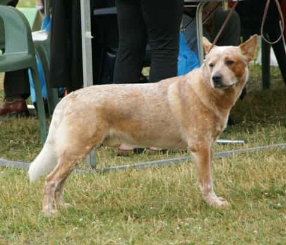

Image Author: Canarian
CC License: Share Alike 3.0
The Australian Cattle Dog/Blue Heeler/Red Heeler
As one of the three names of this dog implies, the Australian Cattle Dog was bred to herd cattle over distance. It is also called the ‘heeler’ because it is known to nip at the heels to herd cattle or people together. The Heeler is known to be an agile and strong breed that makes it a ideal working dog.
The American Kennel Club ranks the Blue Heeler 51 out of the 284 breeds registered in the website. The website also notes that these dogs are high-energy, and related to the Dingo.
Ten-ten’s mom looked like a Blue Heeler, but Ten-ten looks nothing like her mom. Her face is sorta similar, I guess, maybe, kinda. She obsesses over herding her family together, so that checks out.